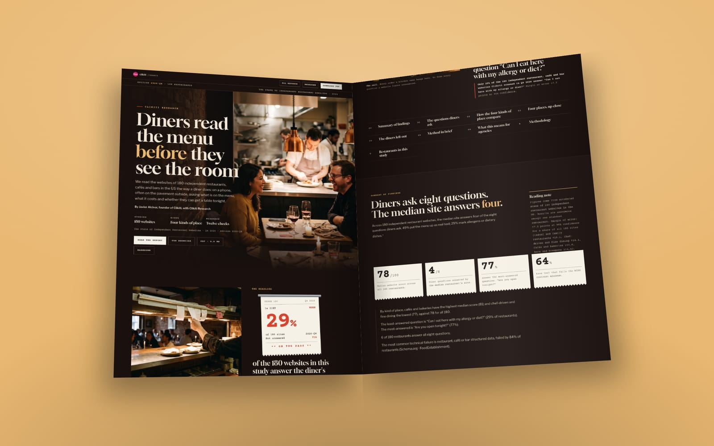
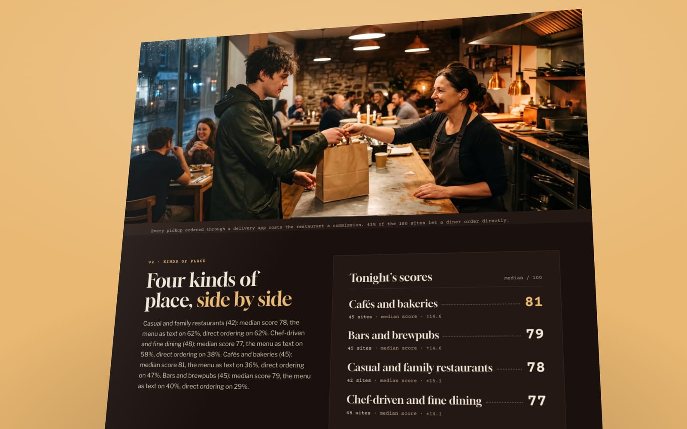

Field guide: the menu as a phone sees it, on 180 restaurant websites
49% of the 180 independent restaurant, café and bar websites we scanned put the menu up as real text. The rest hand a phone a PDF, a photo, an app page or nothing. Here is what each one shows a diner and a search engine, and how to check a prospect's in two minutes.
- Only 49% of 180 independent restaurant, café and bar websites put the menu up as real text a phone can read, not a PDF or a photo (Clikiti Research, October 2026).
- The text menu carries the next answers with it: 34% of the sites show prices beside dishes, and 29% mark allergens or vegetarian, vegan and gluten-free dishes, the least-answered diner question in the study.
- Casual and family restaurants lead at 62%; cafés and bakeries trail at 36%. Moving a PDF menu onto a page is a content job, and it is the fix the rest of the menu work stands on.

Take any independent restaurant's website, open it on your phone and tap Menu. You land on one of five things: a page of dishes you can read and scroll, a PDF, a photo of the printed menu, an ordering app, or nothing at all. Only the first one is a menu to everybody who asks for it.
The State of Independent Restaurant Websites 2026 read 180 independent restaurant, café and bar websites the way a diner does. On the question every diner asks first after "are you open", the count is plain: only 49% put the menu up as real text a phone can read. 51% serve a PDF, a photo, an app page, or no menu we could find.
This guide walks the counter with you: what the scan counted, what each kind of menu looks like from the phone and from a search engine, and how to check a prospect's site before you call.
What did the scan count as a menu?#
We fetched each home page as a server sends it, followed the link marked Menu (or Food, Dinner, Eats, Tap list and the like), and read what came back. A menu passes when the page carries at least eight short lines that read as dishes or drinks, or five dishes with five prices. If the menu page didn't have them, we tried one menu it links to, then the home page.
Anything else fails, and the evidence records which kind of fail it was: a PDF link, a page that is mostly images, a link out to an ordering or delivery app, or no menu at all.
Two limits to keep straight. The scan reads the page the server delivers, so a menu that only appears after scripts run counts as missing; a search engine on a slow pass and an older phone on a weak signal meet the same gap. And it says nothing about the food. It reads what a site shows, never how good the cooking is.
The five menus you'll meet#
Text on a page. Dishes as words in the page itself. It reflows to the width of the phone, the type size follows the reader's settings, a screen reader reads it top to bottom, and a search engine can index every dish. Someone searching for a dish near them can land on this page.
A PDF. It opens in a viewer or downloads, at the size it was laid out for paper. The diner pinches and drags around a two-column page. Search engines can read some PDFs, but the file sits outside the site's pages, often with an old file name. Screen readers depend on how the file was exported.
A photo of the menu. A picture of words. Nothing in it can be selected, searched, translated or read aloud unless someone wrote it out in the alt text. WCAG 1.4.5 asks for text, not images of text, for exactly this reason.
An app page. The menu lives on an ordering or delivery service. It may read fine there, but it sits on someone else's site, so the restaurant's own page has no menu of its own.
Nothing. No menu link we could follow, or a menu page with too little on it to read as one. To a diner, that is a closed kitchen.
Why the menu decides the next two answers#
A text menu isn't the only fix, but it is the one the rest of the menu work stands on.
Prices. Only 34% of the sites show prices beside dishes. Our rule reads prices from a text menu, five or more next to dishes, so a PDF with prices on it doesn't count here. That is deliberate: a diner checking what dinner will cost on a phone wants it on the page, and so does a search engine.
Allergens and diets. 29% of the sites mark allergens or vegetarian, vegan and gluten-free dishes. That is the least-answered of the eight diner questions in the study, and the one the report leads with. The marks have to be readable to count, which means text: a GF in a PDF or a photo can't be searched, filtered or read aloud.
Share of sites that answer each question
180 websites · Independent restaurants, cafés and bars · Q4 2026
And one technical check rides along. Only 16% of the sites carry restaurant, café or bar structured data, the markup that tells search engines the address, the hours and where the menu is. A menu page with a stable address is the thing that markup points to.
Which kinds of place are furthest behind?#
The four groups in the study, on the three menu questions:
| Kind of place | Menu as text | Prices shown | Diet marked |
|---|---|---|---|
| Casual and family restaurants | 62% | 45% | 43% |
| Chef-driven and fine dining | 58% | 42% | 23% |
| Bars and brewpubs | 40% | 27% | 22% |
| Cafés and bakeries | 36% | 22% | 29% |
Casual and family places lead on all three. Chef-driven rooms put their menu up as text more often than not, but mark diets on only 23%, which is the gap to raise with a tasting-menu kitchen that handles requests every night. Cafés and bars trail on the menu itself, and on prices with it: fewer than three in ten show prices beside dishes.
What does a phone-ready menu look like?#
Short sections, one dish to a line, a description and a price beside it, and a legend near the top that a diner meets before the first course. The legend is the cheapest win on the page. Here is one an agency can hand over as written:
V vegetarian · VG vegan · GF made without gluten. Tell us about any allergy when you order. The kitchen can tell you what is in every dish and what we can change. Our kitchen handles nuts, dairy, wheat and shellfish, so we can't promise any dish is free of them.
Then one line under the menu title, so the owner has a reason to keep it current:
This is tonight's menu. It changes with the season, and we update this page whenever it does. Prefer paper? Download the printable menu.
The PDF can stay, as that download. It just stops being the menu.
How do you check a prospect's menu in two minutes?#
- On your phone, tap Menu. Note which of the five you get.
- Try to select a dish name. If you can't, it isn't text.
- Look for a price and a GF or V. Both should sit beside the dish, on the page.
- Search the restaurant's name with one signature dish. If only a PDF or an app page comes up, the site's own pages aren't carrying the menu.
Write down what you found in the owner's words: "Your menu is a photo." That sentence does more work in the first conversation than any score.
For the conversation itself, our audit recording script turns these checks into a five-minute screen video for the owner. Prices are the conversation that follows the menu, and auto shops have the same gap; our talk track for repair shops shows how to ask an owner for numbers they already give at the counter. The full numbers, by kind of place, are in the report.

Keep reading
More on restaurants and the same problems in other industries

The audit recording: a five-minute screen video for a restaurant owner

72% of salon websites take bookings online. 42% say what happens if you cancel.

Meet Clikiti Research: open data on how small-business websites treat the people who use them
How to cite
Clikiti Research (2026, October 15). Field guide: the menu as a phone sees it, on 180 restaurant websites. Clikiti. https://clikiti.com/research/posts/restaurant-menu-as-a-phone-sees-it
Data and license
Every number comes from The State of Independent Restaurant Websites 2026 (n = 180). Free to reuse under CC BY 4.0. Credit Clikiti with a link. Plain Markdown
About the images
People in the photographs on this page are AI-generated. No real person, school, firm or practice is shown. Last updated Oct 15, 2026.
One stat. One pitch. Every Tuesday.
A finding from our scans, what it means for the agencies selling to that industry, and the line to open a pitch with. Free.